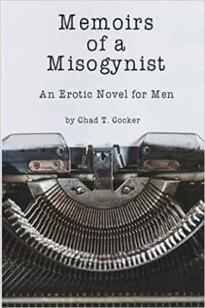

Sponsored Article is ROK's official account that publishes sponsored articles from advertisers. If you are interested hiring a sponsored article for your site, product, or service, visit our advertising page.


The following post was sponsored by Chad Cocker and written by Matt Forney
Everyone says that you shouldn’t judge a book by its cover, but that’s really difficult when the cover makes you throw up a little in your mouth. That’s how I felt when I was tasked with writing a review of Chad T. Cocker’s Memoirs of a Misogynist: An Erotic Novel for Men. What kind of “man” would want to read an erotic novel? Romance and erotica are female masturbation material; trying to write a Harlequin novel men is like marketing lesbian porn to actual lesbians.
Or so I thought.
Despite the packaging, Memoirs of a Misogynist is one of the best works I’ve read this year. Contrary to Cocker’s marketing, the novel is a examination of life as a man in modern America, filtered through the protagonist’s relationships with women. While it starts slowly, Cocker’s prose and honesty save the day and make Memoirs of a Misogynist absolutely worth your time and money.

Because mainstream publishing almost exclusively caters to women, underground and independent writers have turned to fill the void of male-centric literature. From braggadocios “fratire” writers like Tucker Max and Maddox to “loser lit” authors such as Andy Nowicki and Ann Sterzinger to our very own Roosh and Quintus Curtius, there’s a surfeit of alternative writing for men who are sick of the misandry and feminism of the “real” literary world.
Viewed against the backdrop of alternative publishing, Memoirs of a Misogynist is an odd animal indeed. When I first picked it up, I assumed it would be a tell-all memoir along the lines of Roosh’s A Dead Bat in Paraguay, or a roman à clef in the fashion of Charles Bukowski’s work. However, it does indeed live up to its subtitle, as much of the novel is devoted to lengthy, detailed descriptions of the protagonist’s sexual encounters:
She’d also gotten used to her chastity belt, and that scared her. It still didn’t sit well with her that Master had total control over her sexual gratification. Slave was constantly wet and horny, and that made her even more compliant. The orgasms that Master gave her were unlike anything she had experienced before. They were mind-blowing. Even after a year together, their sex was electric and deeply satisfying.
In the introduction, Cocker warns us that the book is “possibly the dirtiest, most depraved, and most offensive novel you’ve ever read,” making me wonder if he’s ever heard of 120 Days of Sodom. Still, the structure of Memoirs’ plot and the skill of Cocker’s prose shows that he’s both acquainted with classic erotica and has actually had sex with a lot of girls. The first half of the book is reminiscent of Pauline Reage’s Story of O, in which a woman is systematically trained to become a sex slave.
Interestingly, Memoirs of a Misogynist also seems inspired by Venus in Furs: not the Velvet Underground song, but the erotic novel by Leopold von Sacher-Masoch. It’s from Sacher-Masoch that we derive the term “masochism,” the tendency to derive sexual pleasure from pain (akin to how “sadism” is derived from Sade), as the plot revolves around a man who desires nothing more than to be utterly subservient to his mistress. Severin’s humiliation at the hands of his lover drives him to become a “misogynist” in the same way that Cocker’s protagonist is one:
That woman, as nature has created her, and man at present is educating her, is man’s enemy. She can only be his slave or his despot, but never his companion. This she can become only when she has the same rights as he and is his equal in education and work.
(It’s worth noting that Sacher-Masoch was a feminist and believed that equal relationships with women would only become possible with women’s liberation. Insert your own joke here.)

Enjoying Memoirs of a Misogynist requires you to get past the initial few chapters, which read like Fifty Shades of Grey with about 30 extra IQ points. The initial plot concerns Melinda, a runaway who falls into the care of a wealthy man who goes unnamed for most of the book. After offering her room and board, the man and Melinda begin a relationship, sealed by a contract where she agrees to become his sexual plaything:
“My body is my Master’s. It is his blank canvas, for him to modify as many times, and in as many different ways as he chooses.” He could hear her breath quickening as he read. “He will control my bodily functions; most particularly my orgasms. I will only orgasm when my Master allows me.”
What saves the book—and what kept me reading—was its depiction of the protagonist (henceforth referred to as “Master”). Far from the masturbatory blank slate that Christian Grey was, Cocker depicts Master as a complex and conflicted character, constantly trying to rationalize the way he treats Melinda (later re-christened “Slave”). Cocker’s deft writing kept me wondering what the protagonist’s motivations were all the way to the end. The book also frequently switches to Melinda’s perspective; while it’s usually a challenge for male writers to depict female characters (and vice versa), Cocker is skilled enough to make her compelling as well.
Where Memoirs really picks up is in the second half, which is set nearly ten years later. The focus shifts to Elizabeth Avery, a disgraced doctor stripped of her medical license after she’s caught abusing a male patient. Destitute and despondent, she accepts a job as the personal physician of Master’s stable of whores, his lifestyle offending her feminist sensibilities:
Doctor Avery’s world was spinning. She tried to distance herself. This was just a patient, after all. She was being paid a significant amount of money for this job—the kind of money that would solve a lot of her problems. Regardless, she couldn’t help but be disgusted that a woman had allowed herself to be treated this way. He’d said she consented to this. In fact, the way she looked at the man showed she clearly loved him, and was a willing participant in her modifications and degradation. The woman, or Melinda, as the man had called her, looked up at him with what the doctor could only call adoration.
Once again, it would have been easy for Cocker to depict Elizabeth as a raging, bra-burning feminist stereotype, but he agilely avoids clichés in favor of nuance. Elizabeth isn’t portrayed as a fire-breathing misandrist, but as a woman who unthinkingly absorbs leftist cant and has her life ruined because of it. The final chapters of the book show Elizabeth tussling with the sexual arousal she feels working for “Mr. X” (her name for the protagonist) and her attempts to maintain her beliefs as the evidence of her failed life piles up. I won’t spoil the ending, other than to say that after finishing the book, I had to sit on it and digest it for a few days.
Each chapter of Memoirs begins with a factual statistic about the state of men and boys in America today, a jarring contrast with the depravity of the book’s action. I initially wondered why they were there, but as I approached the end of the book, it all suddenly clicked. Memoirs of a Misogynist is a biting look at what our toxic sexual marketplace does to men and women. American dating is like an acid bath: no one who dives into it comes out unscathed. Even men who are successful at getting laid are affected by what they have to do to get ahead. There are no winners, no saints, and no role models: just people trying to make the best of a broken system.
As I stated earlier, Memoirs takes a while to really get going, and if you’re not into lascivious descriptions of sex, the book won’t appeal to you. But if you want a haunting, piercing look at the horror show of modern gender relations, Memoirs of a Misogynist is a must-buy. I can’t wait to see what Cocker comes up with next.